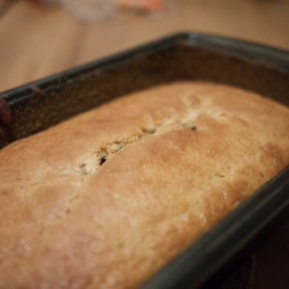
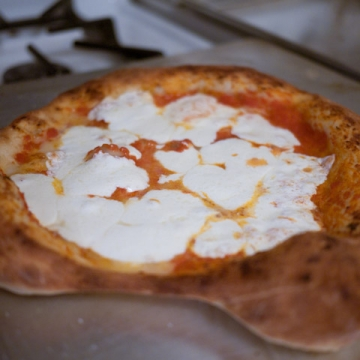
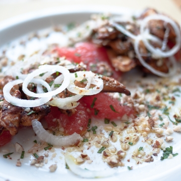
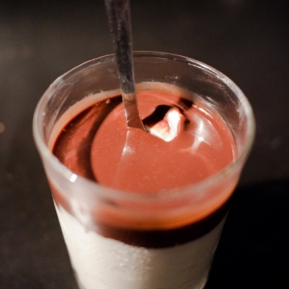
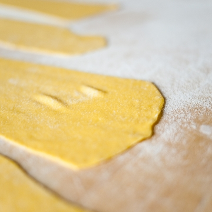
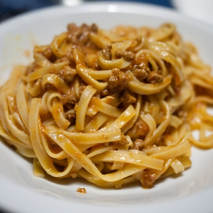
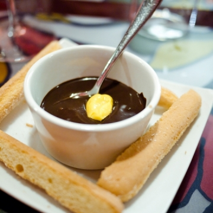

cucino.net
Paolo condivide le sue ricette su cucino.net.
Registrati
per pubblicare le tue. È gratis!
Paolo

La torta di mia nonna
13 Feb 2013
Merluzzo al forno con finocchi
13 Gen 2012
La Matriciana
30 Giu 2011

La pizza
24 Nov 2010
Il guacamole
02 Ott 2010
Straccetti alla romana con rucola...
28 Lug 2010
Spaghetti con le vongole
10 Lug 2010
Il pollo in carpione
30 Giu 2010

Insalata di pollo e pompelmo
23 Giu 2010

Il bicchierino di ricotta gelata...
18 Giu 2010
L'uovo di ricotta e miele
21 Mag 2010

La pasta all'uovo
19 Mag 2010
Le lasagne ai carciofi di nonna...
19 Mag 2010

Ragù alla bolognese
04 Apr 2010

Doppia crema al cioccolato
27 Mar 2010